Building Applications
Jump directly to:
Getting Started Using Visual
C++
Introduction
This chapter guides you through the process
of building and running a simple client and server example using TAO with
Visual C++ (Version 6.0, Service Pack 3) on Windows platforms. If you are
using UNIX or a UNIX-like platform, see the Unix
Section.
If you are new to CORBA, you
may find it helpful to read Chapter 3 of Advanced CORBA Programming
before proceeding.
In this chapter, you will learn how to
-
Set up your environment for using ACE and TAO.
-
We describe the process of setting up your operating
system and Visual C++ environments for using ACE and TAO.
-
Develop a simple client and server using TAO.
-
We show the steps involved in building and running
a simple client and server example.
All ACE and TAO source code files are located
in subdirectories within the ACE_wrappers directory tree. After
ACE and TAO are built, all of the newly-built library, include, and executable
files are also located within this tree. Throughout this chapter it will
be assumed that this directory is installed at the root level of the C:
drive. Thus the entire ACE and TAO installation will be located within
the C:\ACE_wrappers directory tree.
Setting Up Your Environment
Before building or using ACE and TAO, you must
ensure that your operating environment provides access to the necessary
library, include, and executable files that are used by the compiler, linker
and application programs. In See
Setting Environment Variables , you will learn how to set environment
variables to enable access to these files at build and run time. In See
Setting Visual C++ Options , we describe how to set Visual C++ options
to accommodate building applications with TAO.
Setting Environment Variables
Since C:\ACE_wrappers is the root of
the ACE directory tree, we refer to it as ACE_ROOTand
define the environment variable
ACE_ROOT = C:\ACE_wrappers
All TAO source code files are located within
subdirectories of the ACE_wrappers\TAO directory tree. Since C:\ACE_wrappers\TAO
is the root of this tree, we define the environment variable
Once ACE and TAO are built, the libraries , the TAO IDL compiler ( tao_idl.exe ), and the hashing function
used by the IDL compiler ( gperf.exe ) are all in ACE_wrappers\bin
. In order to expedite access to these files, we define the environment
variable
Path = %ACE_ROOT%\bin (or add to existing
Path )
Instructions are given in the following pages
for setting these environment variables in Windows NT, Windows 2000, and
Windows 98.
Setting Windows NT Environment Variables
Right-click on My Computer , then select
Properties .
In the System Properties dialog box,
select the Environment tab.
On the Environment property page
If a variable in System Variables: is
highlighted,
then click below the last entry in User Variables
to ensure that your added variables will appear there.
To set ACE_ROOT
-
In the Variable: box, type ACE_ROOT
.
-
In the Value: box, type C:\ACE_wrappers
.
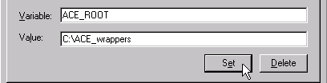
-
Click on Set (Or press Enter ).
To set TAO_ROOT
-
In the Variable: box, type TAO_ROOT
.
-
In the Value: box, type %ACE_ROOT%\TAO
.
-
Click on Set (Or press Enter ).
If Path already appears as a user variable...
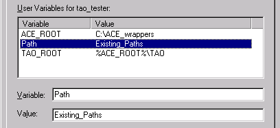
-
In the Value: box, add ;%ACE_ROOT%\bin
.
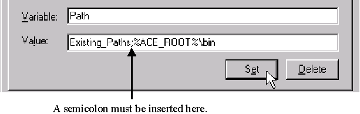
-
Click on Set (Or press Enter ).
If Path does not already appear as a
user variable...
-
In the Variable: box, type Path
.
-
In the Value: box, type %ACE_ROOT%\bin
.
-
Click on Set (Or press Enter ).
The three variables should now appear in the
user variables box.
Click on OK .
Follow the above steps to open the Environment
property page again.
The new variables should now be fully resolved.
Close the System Properties dialog box.
Setting Windows
2000 Environment Variables
Right-click on My Computer , then select
Properties .
In the System Properties dialog box,
select the Advanced tab.
On the Advanced page, click on Environment
Variables...
In the user variables area of the Environment
Variables dialog box, click on New...
In the New User Variable dialog box...
For Variable Name: , type ACE_ROOT
.
For Variable Value: , type C:\ACE_wrappers
.
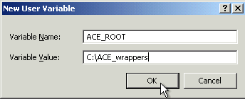
Click on OK .
In the user variables area of the Environment
Variables dialog box, click on New...
In the New User Variable dialog box,
-
For Variable Name: , type TAO_ROOT
.
-
For Variable Value: , type %ACE_ROOT%\TAO
.
-
Click on OK .
If Path already appears as a user variable
in the Environment Variables dialog box...
Click on Path
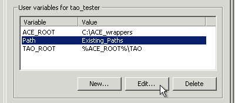
Click on Edit...
In the Edit User Variable dialog box...
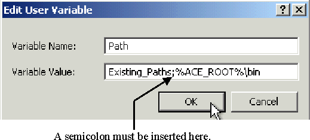
-
In Variable Value: , add ;%ACE_ROOT%\bin
to the existing paths.
-
Click on OK .
If Path does not already appear as a
user variable in the Environment Variables dialog box...
Click on New...
-
In the New User Variable dialog box...
-
For Variable Name: , type Path
.
-
For Variable Value: , type %ACE_ROOT%\bin
.
-
Click on OK .
The three variables should now appear in the
user variables box.
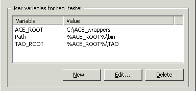
or
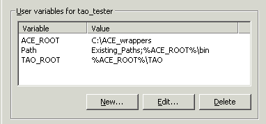
In the Environment Variables dialog box,
click on OK .
In the System Properties dialog box,
click on OK .
Follow the above steps to open Environment
Variables again.
The new variables should now be fully resolved.
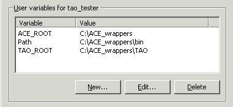
or
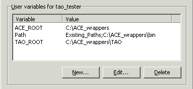
Close Environment Variables and System
Properties.
Setting Windows
98 Environment Variables
Setting Visual C++ Options
You must first modify the Visual
C++ settings so that the compiler and linker will be able to access the
appropriate TAO files. These changes will apply to all Visual C++
sessions.
Start a Visual C++ session.
Select the menu option Tools->Options.
In the Options dialog box
-
Select the Directories tab.
-
On the Directories property page
-
In the Show directories for drop-down
box , select Include Files .
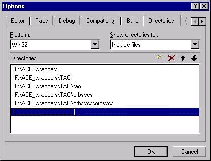
-
In the Directories: box, add :
C:\ACE_wrappers
C:\ACE_wrappers\TAO
C:\ACE_wrappers\TAO\tao
C:\ACE_wrappers\TAO\orbsvcs
C:\ACE_wrappers\TAO\orbsvcs\orbsvcs
-
In the Show directories for drop-down
box,select Library Files .
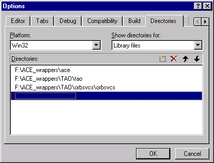
-
In the Directories box, add :
C:\ACE_wrappers\ace
C:\ACE_wrappers\TAO\tao
C:\ACE_wrappers\TAO\orbsvcs\orbsvcs
-
In the Show directories for drop-down
box, select Executable Files .
-
In the Directories: box, add:
C:\ACE_wrappers\bin
-
Click on the OK button.
A Simple Example
We now describe the steps needed to build a
simple example using Visual C++ 6.0. Our example consists of a single server
called MessengerServer that implements a simple Messenger
interface, and a client called MessengerClient that accesses and
uses a MessengerCORBA object provided
by the MessengerServer . You can imagine that a full implementation
of the MessengerServer might send e-mail, access a pager, or even
make a phone call using voice synthesizer technology. To keep our example
simple, we just write out the message to standard output. This same example
will be expanded in later chapters to illustrate various features of TAO.
There are a variety of ways to set up the projects
inside a Visual C++ workspace to work with IDL files and client/server
programs. The approach we use here is to create a separate project that
targets a library consisting of all the code generated by the IDL compiler.
Although this approach may not be needed when just one IDL file is involved,
it scales well when adding more IDL files to the workspace. In this example,
ACE and TAO are installed in C:\ACE_wrappers .
-
Create a Workspace
-
Create Projects within the Workspace
-
Interface Definition Language (IDL) File
-
Create the Messenger class
-
Create the Interface Library
-
Server
-
C++ Implementation
of the Client
-
Run the Client and Server
Create a Workspace
Select the menu option File->New.
In the New dialog box (See Figure 4-1
)
-
Select the Workspaces tab.
-
On the Workspaces property page
-
In the Location: box, type C:\
.
-
In the Workspace name: box, type Messenger
.
-
Visual C++ will add the name of the workspace
to the location.
-
Click on the OK button.
At the top of the workspace window, the following
will appear:
Workspace 'Messenger': 0 project(s)
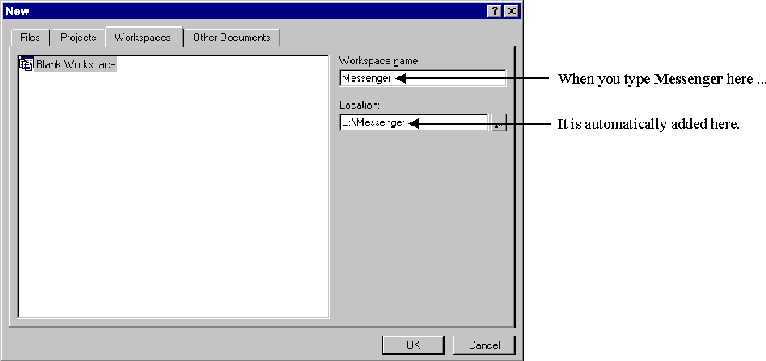
Create Projects within the Workspace
We create the following three projects within
the Messenger workspace:
The Interface project contains the code generated
by the IDL compiler.
The MessengerServer project contains the servant
implementation code as well as the server code.
The MessengerClient project contains the client
code.
As you create a project, Visual C++ automatically
appends the name of the project to the workspace directory path, creating
a subdirectory under the directory containing the workspace file. When
building TAO applications, however, it is preferable to locate the files
for all of the projects within one directory. For this reason, each time
you create a project, you will be instructed to remove the appended project
name from the directory path.
Create a Project for
Code Generated by the IDL Compiler
Right-click on Workspace 'Messenger': 0 project(s)
-
Select Add New Project to Workspace...
In the New dialog box
-
On the Projects property page
-
Win32 Static Library (See Figure 4-2
).
-
In the Project name:box, type Interface.
-
The project name is automatically appended to
the directory path in the Location: box, thus constructing the path
C:\Messenger\Interface .
-
Remove \Interface from this directory
path.
-
Click on the OK button.
Click Finish in the next dialog box that
appears.
Click OK in the next dialog box that appears.
The project appears in the workspace window as
Interface files .
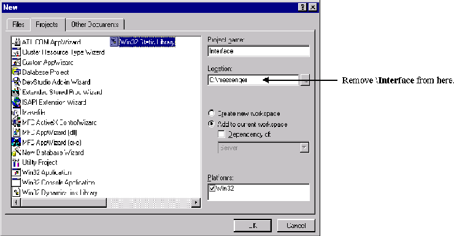
Create the MessengerServer Project
Project
Right-click on Workspace 'Messenger': 1 project(s).
-
Select Add New Project to Workspace...
In the New dialog box
-
On the Projects property page (See Figure 4-3
)
-
Select Win32 Console Application .
-
In the Project Name:box, type MessengerServer.
-
The project name is automatically appended to
the directory path in the Location: box, thus constructing the path
C:\Messenger\MessengerServer .
-
Remove \MessengerServer from this directory
path.
-
Click on the OK button.
Click Finish in the next dialog box that
appears.
Click OK in the next dialog box that appears.
The project will appear in the workspace window
as MessengerServer files .
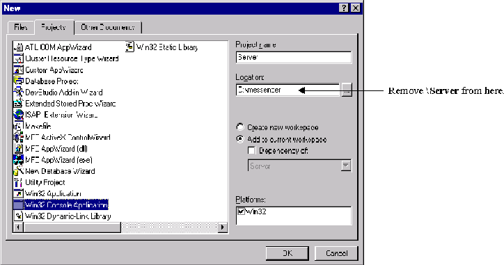
Create the MessengerClient Project
Right-click on Workspace 'Messenger': 2 project(s)
.
-
Select Add New Project to Workspace...
In the New dialog box
-
On the Projects property page
-
Select Win32 Console Application .
-
In the Project Name:box, type MessengerClient.
-
The project name is automatically appended to
the directory path in the Location: box, thus constructing the path
C:\Messenger\MessengerClient .
-
Remove \MessengerClient from this directory
path.
-
Click on the OK button.
Click Finish in the next dialog box that
appears.
Click OK in the next dialog box that appears.
The project will appear in the workspace window
as MessengerClient files .
Modify the Project Settings for all the Projects
Select the menu option Project->Settings
.
In the Project Settings dialog box
-
In the Settings For drop-down box
-
Select all three projects.
-
Select the General tab.
-
On the General property page
-
In the Intermediate files: box, type
Debug .
-
In the Output files: box, type Debug
.
-
Select the C/C++ tab.
-
On the C/C++ property page
-
In the Category: drop-down box, select
Code Generation
-
In the Use run time library: drop-down
box,
select Debug Multithreaded DLL .
-
Now select only the MessengerServer and
MessengerClient projects.
-
Select the Link tab.
-
On the Link property page
-
In the Object/library modules: box,
add the following libraries:
aced.lib
TAOd.lib
-
Click on the OK button.
Interface Definition Language (IDL) File
In the workspace window, right-click on Interface
files
-
Select Set as Active Project .
Select the menu option File->New .
In the New dialog box
-
On the Files property page, select Text
File .
-
In the File name: box, type Messenger.idl
.
-
Click on the OK button.
-
Because Interface files is the active
project, Messenger.idl will automatically be added to it.
Type the following code into the Messenger.idl file box.
// Messenger.idl
interface Messenger
{
boolean send_message(in string user_name,
in string subject,
inout string message);
};
Select the menu option File->Save.
Specify How C++ Code is Generated from IDL
Specify a custom build
command for the IDL file.
In the workspace window
-
Double-click on Interface files .
-
Double-click on the Source Files folder
that now appears below Interface files .
-
The Messenger.idl file will appear below
the folder.
-
Right click on Messenger.idl
In the Project Settings dialog box
-
In the Settings For drop-down box, select
Win32 Debug
-
Select the Custom Build tab (See Figure 4-4
).
-
On the Custom Build property page
-
In the Description: box, replace the
existing text with:
Invoking TAO IDL compiler on $(InputPath)
-
In the Commands box, type:
$(ACE_ROOT)\bin\tao_idl.exe -GI $(InputPath)
-
In the Outputs box, type :
$(InputName)C.cpp
$(InputName)C.h
$(InputName)C.i
$(InputName)S.cpp
$(InputName)S.h
$(InputName)S.i
$(InputName)S_T.cpp
$(InputName)S_T.h
$(InputName)S_T.i
-
Click on the OK button.
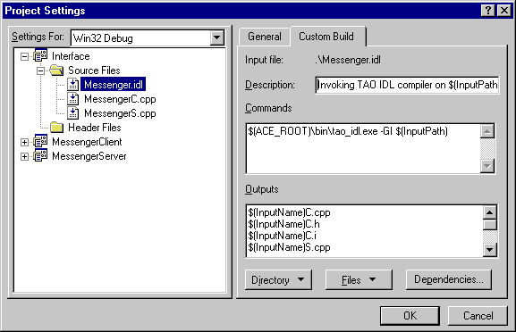
Run the IDL compiler on Messenger.idl
Use the custom build command to compile Messenger.idl
( Figure 4-4)
In the workspace window, right-click on Messenger.idl
-
Select Compile Messenger.idl .
Create the Messenger_i Implementation Class
Among the files created by the IDL compiler and
stored in C:\Messenger are the files MessengerI.h and MessengerI.cpp
. These two files are created by the IDL compiler in response to the -GI
option specified in the Custom Build command above (See Figure 4-4
). They contain starter code that you will use to create the Messenger_i
class header and implementation files.
In order to prevent the IDL compiler from overwriting
changes you make to these files, rename them as follows:
Rename MessengerI.h as Messenger_i.h
.
Rename MessengerI.cpp as Messenger_i.cpp
.
C++ Header for the Messenger_i Class
The file Messenger_i.h generated by the
IDL compiler contains the complete class definition for our Messenger_i
class that implements the Messenger interface defined in Messenger.idl
.
// ****** Code generated by the The ACE ORB (TAO) IDL Compiler *******
// TAO and the TAO IDL Compiler have been developed by the Center for
// Distributed Object Computing at Washington University, St. Louis.
//
// Information about TAO is available at:
// http://www.cs.wustl.edu/~schmidt/TAO.html
#ifndef MESSENGER_I_H_
#define MESSENGER_I_H_
#include "MessengerS.h"
#if !defined (ACE_LACKS_PRAGMA_ONCE)
#pragma once
#endif /* ACE_LACKS_PRAGMA_ONCE */
//Class Messenger_i
class Messenger_i : public virtual POA_Messenger
{
public:
//Constructor
Messenger_i (void);
//Destructor
virtual ~Messenger_i (void);
virtual CORBA::Boolean send_message (
const char * user_name,
const char * subject,
char *& message
)
ACE_THROW_SPEC ((
CORBA::SystemException
));
};
#endif /* MESSENGERI_H_ */
C++ Implementation of the Messenger_i Class
The file Messenger_i.cpp generated by
the IDL compiler contains nearly all the code needed for the Messenger_iclass
implementation file. You need make only the following changes:
Add the line #include <ace/streams.h>
above the class definition.
Change #include "MessengerI.h" to #include
"Messenger_i.h" .
Replace the line " //Add your implementation
here " in the body of the Messenger_i::send_message() operation
with
cout << "Message from: " << user_name << endl;
cout << "Subject: " << subject << endl;
cout << "Message: " << message << endl;
return 1;
The file Messenger_i.cpp should now appear
as follows:
#include "Messenger_i.h"
#include <ace/streams.h>
// Implementation skeleton constructor
Messenger_i::Messenger_i (void){}
// Implementation skeleton destructor
Messenger_i::~Messenger_i (void){}
CORBA::Boolean Messenger_i::send_message (
const char * user_name,
const char * subject,
char *& message
)
ACE_THROW_SPEC ((
CORBA::SystemException
))
{
cout << "Message from: " << user_name << endl;
cout << "Subject: " << subject << endl;
cout << "Message: " << message << endl;
return 1;
}
Create the Interface Library
In the workspace window, right-click on Interface
files .
-
Select Add Files to Project...
In the Insert Files into Project dialog
box
-
Select both MessengerC.cpp and MessengerS.cpp
.
-
Click on the OK button.
-
These files will now appear in the workspace
window below Messenger.idl .
In the workspace window, right-click on Interface
files.
-
Select Build .
-
Wait for the build to complete.
C++ Implementation of the MessengerServer
Our MessengerServer will give our Messenger
object a place to live. It will create an instance of our Messenger_i
servant class, activate it in the RootPOA , then wait for requests
from clients.
#include "Messenger_i.h"
#include <ace/streams.h>
int
main(int argc, char * argv[])
{
try {
// Initialize the ORB.
CORBA::ORB_var orb = CORBA::ORB_init(argc, argv);
// Get a reference to Root POA.
CORBA::Object_var obj = orb->resolve_initial_references("RootPOA");
PortableServer::POA_var poa = PortableServer::POA::_narrow(obj.in());
// Activate the POA manager.
PortableServer::POAManager_var mgr = poa->the_POAManager();
mgr->activate();
// Create a Messenger_i servant.
Messenger_i messenger_servant;
// Register the servant with the RootPOA, obtain its object reference,
// stringify it, and write it to a file
PortableServer::ObjectId_var oid =
poa->activate_object( &messenger_servant );
CORBA::Object_var messenger_obj = poa->id_to_reference( oid.in() );
CORBA::String_var str = orb->object_to_string( messenger_obj.in() );
ofstream iorFile("Messenger.ior");
iorFile << str.in() << endl;
iorFile.close();
cout << "IOR written to file Messenger.ior" << endl;
// Accept requests from clients.
orb->run();
// Release resources.
orb->destroy();
}
catch (const CORBA::Exception & ex) {
cerr << "Caught a CORBA exception: " << ex << endl;
return 1;
}
return 0;
}
C++ Implementation of the MessengerClient
Our MessengerClient will obtain an object
reference to the Messenger and send it a message via its send_message()
operation.
#include "MessengerC.h"
#include <ace/streams.h>
int
main(int argc, char * argv[])
{
try {
// Initialize the ORB
CORBA::ORB_var orb = CORBA::ORB_init(argc, argv);
// Convert the contents of the file to an object reference.
CORBA::Object_var obj = orb->string_to_object("file://Messenger.ior");
if (CORBA::is_nil(obj.in())) {
cerr << "Nil Messenger reference" << endl;
throw 0;
}
// Narrow the object reference to a Messenger object reference.
Messenger_var messenger = Messenger::_narrow(obj.in());
if (CORBA::is_nil(messenger.in ())) {
cerr << "Not a Messenger object reference" << endl;
throw 0;
}
// Create a message and send it to the Messenger.
CORBA::String_var message = CORBA::string_dup("Howdy!");
messenger->send_message ("rick", "Test", message.inout());
// Release resources.
orb->destroy();
}
catch (const CORBA::Exception & ex) {
cerr << "Caught a CORBA exception: " << ex << endl;
return 1;
}
catch (...) {
return 1;
}
cout << "Message was sent" << endl;
return 0;
}
Build the MessengerServer and MessengerClient
Add the client and server code to their projects
Copy MessengerServer.cpp and MessengerClient.cpp
into the Messenger folder.
In the workspace window, right-click on MessengerServer
files .
-
Select Add Files to Project...
In the Insert Files into Project dialog
box
-
Select both of the following files:
Messenger_i.cpp
MessengerServer.cpp
-
Click on the OK button.
In the workspace window, right-click on MessengerClient
files .
-
Select Add Files to Project...
In the Insert Files into Project dialog
box
-
Select MessengerClient.cpp
-
Click on the OK button.
Set up dependencies on the Interface library
Both the MessengerServer and the MessengerClient
are dependent on the Interface library. The following instructions set
up these dependencies.
Select the menu option Project->Dependencies
.
In the Project->Dependencies dialog box
-
In the Select project to modify drop-down
box
-
In the Dependent on the following project(s)
box
-
In the Select project to modify drop-down
box
-
In the Dependent on the following project(s)
box
-
Click on the OK button.
Build the projects
In the workspace window, right-click on MessengerServer
files
-
Select Set as Active Project .
In the workspace window, right-click on MessengerServer
files
-
Select Build .
-
Wait for the build to complete.
In the workspace window, right-click on MessengerClient
files
-
Select Set as Active Project .
In the workspace window, right-click on MessengerClient
files
-
Select Build .
-
Wait for the build to complete.
Running the Application
We are now ready to run the MessengerServer
and MessengerClient . The server must be running before the client
is started.
Run the MessengerServer in one window
with the following command:
MessengerServer
Wait for the message " IOR written to file
Messenger.ior ." Then, in another window, in the same directory, run
the MessengerClient with the following command:
MessengerClient
You should see the following messages in the
server window:
Message from: rick
Subject: Test
Message: Howdy!
You should see the message " Message was
sent " in the client window. The client then terminates and your normal
command prompt appears. You can kill the server with CTRL-C .
Footnotes for Visual C++ Section
Getting Started on UNIX and UNIX-like Platforms
Introduction
This chapter guides you through the process of building and running
a simple client/server application using TAO on a UNIX or UNIX-like operating
system. If you are new to CORBA, you may find it helpful to read Chapter
3 of Advanced CORBA Programming before proceeding.
In this chapter, you will learn how to
Set up your environment for using ACE and TAO.
-
We describe the process of setting up your operating system environment
for using ACE and TAO.
Develop a simple client and server using TAO.
-
We show the steps involved in building and running a simple client and
server example.
All ACE and TAO source code files are located in subdirectories within
the ACE_wrappers directory tree. After ACE and TAO are built, all
of the newly-built library, include, and executable files are also located
within this tree. In this chapter, we will often refer to this location,
though we make no assumptions as to where it might be installed on your
system.
Setting Up Your Environment
Environment Variables
There are certain environment variables used by ACE and TAO during
both the compilation and execution of applications:
-
ACE_ROOT=<installed_location>/ACE_wrappers
-
This is the base path for the ACE installation. <installed_location>
is the directory into which the distribution was installed.
-
TAO_ROOT=$ACE_ROOT/TAO
-
The base path for all TAO-related code. Since TAO is a member of the ACE
family of software, its base path is ACE_wrappers/TAO . This preserves
the relationship between TAO and ACE.
-
LD_LIBRARY_PATH=$LD_LIBRARY_PATH:$ACE_ROOT/ace
-
This path may already exist. You need to add the location of the ACE and
TAO libraries to it.
-
MAKEFLAGS="debug=0 exceptions=1"
-
This variable is optional. These parameters may be specified in other places.
The actual parameters may be different than those shown above. Some of
the available choices will be explained later.
A Simple Example
We now describe the steps needed to build a simple example using the
C++ compiler and GNU Make. Currently, only GNU Make can be used to build
ACE/TAO applications. This should not be a problem as GNU Make is available
on any UNIX or UNIX-like platform on which ACE and TAO are available. The
approach used will be to create all the code in the same directory and
provide a Makefile in that directory to build the application executables.
Larger projects may use a different structure, such as libraries and nested
subdirectories, but that is not covered in this example.
Our example consists of a server called MessengerServer that
implements a simple Messengerinterface, plus a client called MessengerClient
that accesses and uses a Messenger CORBA object that MessengerServer
provides. Imagine that a full implementation of the MessengerServer
might send e-mail, access a pager, or even make a phone call using voice
synthesizer technology. To keep our example simple, we just write out the
message to standard output. This same example will be expanded in later
chapters to illustrate various features of TAO.
Create a Workspace
First, create a directory in which to work. This directory does not
need to be in any particular place. That is, it does not need to be located
within the ACE and TAO source tree, nor your home directory; it can be
anywhere. Change your current directory to this newly-created one.
mkdir Messenger
cd Messenger
Messenger Interface Definition Language (IDL) File
Using your favorite editor, create a file called Messenger.idlto
contain the interface definition for a simple Messenger:
// Messenger.idl
interface Messenger
{
boolean send_message(in string user_name,
in string subject,
inout string message);
};
For this example we use the IDL compiler to build a skeleton of the
class implementation module, so we run the IDL compiler manually now.
Run the IDL Compiler
The IDL compiler generates stub and skeleton code from the IDL interface
definitions contained in the a Messenger.idl file. Details of using
the IDL compiler are found in . To generate stub and skeleton code from
the IDL definition above, type the following command:
$TAO_ROOT/TAO_IDL/tao_idl -GI Messenger.idl
The -GI option specifies that the IDL compiler should generate
starter code for our implementation of the Messenger interface.
Create the Messenger_i Implementation Class
Among the files created by the IDL compiler and stored in the current
directory are the files MessengerI.h and
MessengerI.cpp .
These two files are created by the IDL compiler in response to the -GI
option specified in the command above. They contain starter code that you
will use to create the Messenger_i class header and implementation
files.
The remainder of the files generated by the IDL compiler will be used
later. The naming convention is that the files with a " C " appended
to their name are client side, and files with an " S " appended
are server side. However, the files ending with " C " are actually
used by both client and server. The files ending with " .i " and
" _T.* " are included by others, so we will not deal with them directly.In
order to prevent the IDL compiler from overwriting changes you make to
the starter implementation files, rename them as follows:
-
Rename MessengerI.h to Messenger_i.h .
mv MessengerI.h Messenger_i.h
Rename MessengerI.cpp to Messenger_i.cpp .
mv MessengerI.cpp Messenger_i.cpp
C++ Header for the Messenger_i Class
generated by the IDL compiler contains the complete class definition
for our Messenger_i class that implements the Messenger interface
defined in Messenger.idl .
// ****** Code generated by the The ACE ORB (TAO) IDL Compiler *******
// TAO and the TAO IDL Compiler have been developed by the Center for
// Distributed Object Computing at Washington University, St. Louis.
//
// Information about TAO is available at:
// http://www.cs.wustl.edu/~schmidt/TAO.html
#ifndef MESSENGER_I_H_
#define MESSENGER_I_H_
#include "MessengerS.h"
#if !defined (ACE_LACKS_PRAGMA_ONCE)
#pragma once
#endif /* ACE_LACKS_PRAGMA_ONCE */
//Class Messenger_i
class Messenger_i : public virtual POA_Messenger
{
public:
//Constructor
Messenger_i (void);
//Destructor
virtual ~Messenger_i (void);
virtual CORBA::Boolean send_message (
const char * user_name,
const char * subject,
char *& message
)
ACE_THROW_SPEC ((
CORBA::SystemException
));
};
#endif /* MESSENGERI_H_ */
C++ Implementation of the Messenger_i Class
The file Messenger_i.cpp generated by the IDL compiler contains
nearly all the code needed for the Messenger_i class implementation
file. You need make only the following changes:
-
Add the line #include <ace/streams.h> above the class definition.
-
Change #include <MessengerI.h> to #include <Messenger_i.h>
.
-
Replace the line that reads " //Add your implementation here " in
the body of the Messenger_i::send_message() operation with the following:
CORBA::Boolean Messenger_i::send_message (
const char * user_name,
const char * subject,
char *& message
)
ACE_THROW_SPEC ((
CORBA::SystemException
))
{
cout << "Message from: " << user_name << endl;
cout << "Subject: " << subject << endl;
cout << "Message: " << message << endl;
return 1;
}
C++ Implementation of the MessengerServer
Our MessengerServer gives our Messenger object a place to live.
It creates an instance of our Messengers servant class, activates
it in the RootPOA , and waits for requests from clients.
Using your favorite editor, create the MessengerServer.cpp file
with the following content.
#include "Messenger_i.h"
#include <ace/streams.h>
int
main(int argc, char * argv[])
{
try {
// Initialize the ORB.
CORBA::ORB_var orb = CORBA::ORB_init(argc, argv);
// Get a reference to Root POA.
CORBA::Object_var obj = orb->resolve_initial_references("RootPOA");
PortableServer::POA_var poa = PortableServer::POA::_narrow(obj.in());
// Activate the POA manager.
PortableServer::POAManager_var mgr = poa->the_POAManager();
mgr->activate();
// Create a Messenger_i servant.
Messenger_i messenger_servant;
// Register the servant with the RootPOA, obtain its object reference,
// stringify it, and write it to a file
PortableServer::ObjectId_var oid =
poa->activate_object( &messenger_servant );
CORBA::Object_var messenger_obj = poa->id_to_reference( oid.in() );
CORBA::String_var str = orb->object_to_string( messenger_obj.in() );
ofstream iorFile( "Messenger.ior" );
iorFile << str.in() << endl;
iorFile.close();
cout << "IOR written to file Messenger.ior" << endl;
// Accept requests from clients.
orb->run();
// Release resources.
orb->destroy();
}
catch (const CORBA::Exception & ex) {
cerr << "Caught a CORBA exception: " << ex << endl;
return 1;
}
return 0;
}
C++ Implementation of the MessengerClient
Our MessengerClient obtains an object reference to the Messenger
and sends it a message via its send_message() operation.Using your
favorite editor, create the MessengerClient.cpp file with the following
content.
#include "MessengerC.h"
#include <ace/streams.h>
int
main(int argc, char * argv[])
{
try {
// Initialize the ORB
CORBA::ORB_var orb = CORBA::ORB_init(argc, argv);
// Convert the contents of the file to an object reference.
CORBA::Object_var obj = orb->string_to_object("file://Messenger.ior");
if (CORBA::is_nil(obj.in())) {
cerr << "Nil Messenger reference" << endl;
throw 0;
}
// Narrow the object reference to a Messenger object reference.
Messenger_var messenger = Messenger::_narrow(obj.in());
if (CORBA::is_nil(messenger.in ())) {
cerr << "Not a Messenger object reference" << endl;
throw 0;
}
// Create a message and send it to the Messenger.
CORBA::String_var message = CORBA::string_dup("Howdy!");
messenger->send_message ("rick", "Test", message.inout());
// Release resources.
orb->destroy();
}
catch (const CORBA::Exception & ex) {
cerr << "Caught a CORBA exception: " << ex << endl;
return 1;
}
catch (...) {
return 1;
}
cout << "Message was sent" << endl;
return 0;
}
Create a Makefile to Build the Example
All that remains is to create a Makefile that is read by GNU Make to
build our MessengerServer and MessengerClient , and create
executables. Here, we show a basic Makefile that can be used to build this
simple server and client example. For more information on Makefiles used
to build applications that use TAO, see .Using your favorite editor, create
the Makefile with the following content:
# IDL_SRCS contains a list of the basenames of the IDL files.
IDL_SRCS = Messenger
# SERVER_SRCS contains a list of the source files for building the server.
SERVER_SRCS = MessengerC.cpp MessengerS.cpp Messenger_i.cpp MessengerServer.cpp
SERVER_OBJS = $(SERVER_SRCS:.cpp=.o)
SERVER_BIN = server
# CLIENT_SRCS contains a list of the source files for building the client.
CLIENT_SRCS = MessengerC.cpp MessengerClient.cpp
CLIENT_OBJS = $(CLIENT_SRCS:.cpp=.o)
CLIENT_BIN = client
# LDLIBS contains a list of libraries to link with the client and server.
LDLIBS = -lTAO
# BIN lists the executables to be built.
BIN = $(SERVER_BIN) $(CLIENT_BIN)
# Use .PRECIOUS to preserve certain generated files.
.PRECIOUS: MessengerC.h MessengerC.i MessengerC.cpp
.PRECIOUS: MessengerS.h MessengerS.i MessengerS.cpp
#----------------------------------------------------------------------------
# Include macros and targets (provided with ACE+TAO)
#----------------------------------------------------------------------------
include $(ACE_ROOT)/include/makeinclude/wrapper_macros.GNU
include $(ACE_ROOT)/include/makeinclude/macros.GNU
include $(TAO_ROOT)/rules.tao.GNU
include $(ACE_ROOT)/include/makeinclude/rules.common.GNU
include $(ACE_ROOT)/include/makeinclude/rules.nonested.GNU
include $(ACE_ROOT)/include/makeinclude/rules.local.GNU
include $(TAO_ROOT)/taoconfig.mk
# Target to build the server.
$(SERVER_BIN): $(addprefix $(VDIR),$(SERVER_OBJS))
$(LINK.cc) $(LDFLAGS) -o $@ $^ $(VLDLIBS) $(POSTLINK)
# Target to build the client.
$(CLIENT_BIN): $(addprefix $(VDIR),$(CLIENT_OBJS))
$(LINK.cc) $(LDFLAGS) -o $@ $^ $(VLDLIBS) $(POSTLINK)
This Makefile deserves some explanation. Some of the macro names and
some of the lines are predefined.
-
IDL_SRCS defines the source files to the IDL compiler. This name
is predefined. These files will automatically be processed by the TAO IDL
compiler whenever they change.
-
The next three lines define our server. These names are arbitrary.
-
The first line defines the sources that build our server. The file MessengerC.cpp
contains the Messenger stub class used by the client to invoke operations
on Messenger CORBA object references. The MessengerS.cpp file contains
skeleton class and related definitions. Our implementation of the Messenger_i
servant class is contained in the file Messenger_i.cpp . Our server's
main() function that gives our Messenger object a place to live
is contained in the file MessengerServer.cpp .
-
The second line builds object file names from the source file names.
-
The third line names the executable for the server.
-
The next three lines define our client in much the same way as the server.
-
LDLIBS is a predefined macro name that holds the list of libraries
to be passed to the link editor. Since this is a TAO program, we need to
specify the TAO library. (The ACE library is always included.)
-
BIN is a predefined macro name that lists all the executables to
be built.
-
The two .PRECIOUS lines tell GNU Make to not delete these files
after it uses them. This allows us to go back and look at them if we need
to. This is optional, the application will build and run without these
lines.
-
The group of include statements are boilerplate, so just copy them
as is.
-
The last four lines tell GNU Make how to build the executables.
-
The names with SERVER or CLIENT in them match your choice
of name above.
-
The addprefix function picks up the compiled object files from a
separate subdirectory ( .obj/ by default). Object files are placed
there to avoid cluttering the source directory.
-
The LINK.cc macro invokes the appropriate linker for your platform
(the linker command may in fact be the same as the command for the C++
compiler).
One final note on the included Makefiles. Their position in this Makefile
is not arbitrary, so put them as shown. They use some of the macros defined
above them as arguments and define other macros that are used in the lines
that follow them.
By using these Makefile include files, the first target
found will be all . Just typing make on the command line
will build your complete application as expected. There are several additional
targets defined in the various Makefile include files. Two that are particularly
useful are
clean , which removes all the object files and some other
temporary intermediate files, and realclean , which removes even
more files including your target executable For more information about
TAO application Makefiles, see .
Build the MessengerServer and MessengerClient
To build the server and client, simply type
make or gmake
, whichever will run GNU Make on your system.
You will see several compile
and link operations. If any of the modules fails to compile or link, make
will stop. Using the error messages provided by the compiler and linker,
fix the source and try again, just as for any other program you write.
Running the Application
We are now ready to run the MessengerServer and MessengerClient
. The server must be running before the client is started.Run the MessengerServer
in the background with the following command:
./MessengerServer &
Wait for the message " IOR written to file Messenger.ior, "
then run the MessengerClient with the folowing command:
./MessengerClient
You should see the following messages:
Message from: rick
Subject: Test
Message: Howdy
message was sent
The first three are from the MessengerServer (running in the
background), and the last one is from the MessengerClient . The
client then terminates, and your normal prompt appears.
Note that the MessengerServer
is still running, waiting for more client requests. To kill the MessengerServer
, just type kill %1 or the number of the background process.